| variable | name | type | description |
|---|---|---|---|
| essay_id | Essay ID | categorical | Unique identifier for each essay |
| part_id | Participant ID | categorical | Identifier for each participant learner |
| sex | Sex | categorical | Sex of the participant |
| group | Group | ordinal | Time group of the essay, ordered from T1 to T4 (10, 12, 16, and 17 years old) |
| tokens | Tokens | numeric | Number of word tokens in the essay |
| types | Types | numeric | Number of unique word types in the essay |
| ttr | TTR | numeric | Type-Token Ratio (TTR) of the essay |
| prop_l2 | Proportion of L2 | numeric | Proportion of words in the essay identified as second (target) language (L2) |
3 Analysis
Statistical thinking will one day be as necessary for efficient citizenship as the ability to read and write.
— H.G. Wells
The goal of an analysis is to break down complex information into simpler components which are more readily interpretable. In what follows, we will cover the main steps in this process. The first is to inspect the data to ensure its quality and understand its characteristics. The second is to interrogate the data to uncover patterns and relationships and interpret the findings. To conclude this chapter, I will outline methods to and the importance of communicating the analysis results and procedure in a transparent and reproducible manner.
3.1 Describe
The goal of descriptive statistics is to summarize the data in order to understand and prepare the data for the analysis approach to be performed. This is accomplished through a combination of statistic measures and/ or tabular or graphic summaries. The choice of descriptive statistics is guided by the type of data, as well as the question(s) being asked of the data.
In descriptive statistics, there are four basic questions that are asked of each of the variables in the dataset. Each correspond to a different type of descriptive measure.
- Central Tendency: Where do the data points tend to be located?
- Dispersion: How spread out are the data points?
- Distribution: What is the overall shape of of the data points?
- Association: How are these data points related to other data points?
To ground this discussion I will introduce a new dataset. This dataset is drawn from the Barcelona English Language Corpus (BELC) (Muñoz, 2006), which is found in the TalkBank repository. I’ve selected the “Written composition” task from this corpus which contains 80 writing samples from 36 second language learners of English at different ages. Participants were given the task of writing for 15 minutes on the topic of “Me: my past, present and future”. Data was collected for participants from one to three times over the course of seven years (at 10, 12, 16, and 17 years of age).
In Table 3.1 we see the data dictionary for the BELC dataset which reflects structural and transformational steps I’ve done so we start with a tidy dataset with essay_id as the unit of observation.
Now, let’s take a look a the first few observations of the BELC dataset to get another perspective on the dataset as we view the values of the dataset.
| essay_id | part_id | sex | group | tokens | types | ttr | prop_l2 |
|---|---|---|---|---|---|---|---|
| E1 | L01 | female | T2 | 79 | 46 | 0.582 | 0.987 |
| E2 | L02 | female | T1 | 18 | 18 | 1.000 | 0.667 |
| E3 | L02 | female | T3 | 101 | 53 | 0.525 | 1.000 |
| E4 | L05 | female | T1 | 20 | 17 | 0.850 | 0.900 |
| E5 | L05 | female | T3 | 158 | 80 | 0.506 | 0.987 |
In Table 3.2, each of the variable are attributes or measures of the essay_id variable. tokens is the number of total words, types is the number of unique words, ttr is the ratio of unique words to total words. This is known as the Type-Token Ratio and it is a standard metric for measuring lexical diversity. Finally, the proportion of L2 words (English) to the total words (tokens) is provided in prop_l2.
Let’s now turn our attention to exploring descriptive measures using the BELC dataset.
Central tendency
The central tendency is measure which aims to summarize the data points in a variable as the most representative, middle, or most typical value. There are three common measures of central tendency: the mode, mean and median. Each differ in how they summarize the data points.
The mode is the value that appears most frequently in a set of values. If there are multiple values with the highest frequency, then the variable is said to be multimodal. The most versatile of the central tendency measures as it can be applied to all levels of measurement, although the mode is not often used for numeric variables as it is not as informative as other measures.
The more common measures for numeric variables are the mean and the median. The mean is a summary statistic calculated by summing all the values and dividing by the number of values. The median is calculated by sorting all the values in the variable and then selecting the middle value.
| variable | top_counts |
|---|---|
| essay_id | E1: 1, E10: 1, E11: 1, E12: 1 |
| part_id | L05: 3, L10: 3, L11: 3, L12: 3 |
| sex | fem: 48, mal: 32 |
| group | T1: 25, T3: 24, T2: 16, T4: 15 |
| variable | mean | median |
|---|---|---|
| tokens | 67.62 | 56.5 |
| types | 41.85 | 38.5 |
| ttr | 0.68 | 0.66 |
| prop_l2 | 0.96 | 0.99 |
As the mode is the most frequent value, the top_counts measure in Table 3.3 provides the most frequent value for the categorical variables. Mean and median appear but we notice that the mean and median are not the same for the numeric variables. Differences that appear between the mean and median will be of interest to us later in this chapter.
Dispersion
To understand how representative a central tendency measure is we use a calculation of the the spread of the values around the central tendency, or dispersion. Dispersion is a measure of how spread out the values are around the central tendency. The more spread out the values, the less representative the central tendency measure is.
For categorical variables, the spread is framed in terms of how balanced the values are across the levels. One way to do this is to use proportions. The proportion of each level is the frequency of the level divided by the total number of values. Another way is to calculate the (normalized) entropy. Entropy is a single measure of uncertainty. The more balanced the values are across the levels, the closer entropy is 1. In practice, however, proportions are often used to assess the balance of the values across the levels.
The most common measure of dispersion for numeric variables is the standard deviation. The standard deviation is calculated by taking the square root of the variance. The variance is the average of the squared differences from the mean. So, more succinctly, the standard deviation is a measure of the spread of the values around the mean. Where the standard deviation is anchored to the mean, the interquartile range (IQR) is tied to the median. The median represents the sorted middle of the values, in other words the 50th percentile. The IQR is the difference between the 75th percentile and the 25th percentile.
| variable | norm_entropy |
|---|---|
| essay_id | 1 |
| part_id | 0.98 |
| sex | 0.97 |
| group | 0.98 |
| variable | sd | iqr |
|---|---|---|
| tokens | 44.2 | 61.25 |
| types | 23.03 | 31.5 |
| ttr | 0.13 | 0.149 |
| prop_l2 | 0.1 | 0.027 |
In Table 3.4 (a), the normalized entropy helps us understand the balance of the values across the levels of the categorical variables. In Table 3.4 (b), the standard deviation and IQR provide a sense of the spread of the values around the mean and median, respectively, for the numeric variables.
When interpreting numeric central tendency and dispersion values, it is important to only directly compare column-wise. That is, focusing only on a single variable, not across variables. Each variable, as is, is measured on a different scale and only relative to itself can we make sense of the values.
Distributions
Summary statistics of the central tendency and dispersion of a variable provide a sense of the most representative value and how spread out the data is around this value. However, to gain a more comprehensive understanding of the variable, it is key to consider the frequencies of all the data points. The distribution of a variable is the pattern or shape of the data that emerges when the frequencies of all data points are considered. This can reveal patterns that might not be immediately apparent from summary statistics alone.
When assessing the distribution of categorical variables, we can use a frequency table or bar plot. Frequency tables display the frequency and/ or proportion each level in a categorical variable in a clear and concise manner. In Table 3.5 we see the frequency table for the variable sex and group.
| sex | frequency | proportion |
|---|---|---|
| female | 48 | 0.6 |
| male | 32 | 0.4 |
| group | frequency | proportion |
|---|---|---|
| T1 | 25 | 0.312 |
| T2 | 16 | 0.200 |
| T3 | 24 | 0.300 |
| T4 | 15 | 0.188 |
A bar plot is a type of plot where the x-axis is a categorical variable and the y-axis is the frequency of the values. The frequency is represented by the height of the bar. The variables can be ordered by frequency, alphabetically, or some other order. Figure 3.2 is a bar chart for the variables sex and group ordered alphabetically.
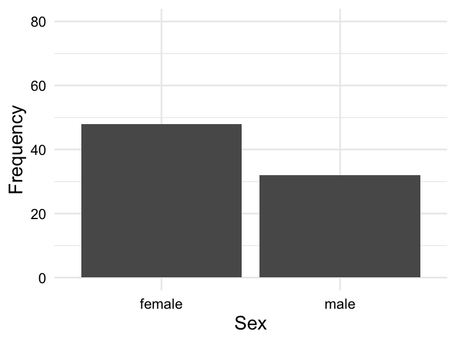
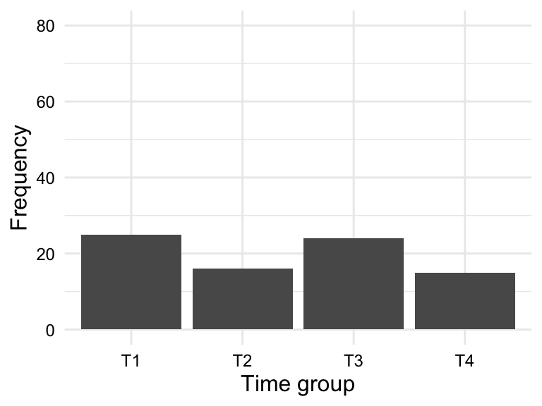
sex and group
So for a frequency table or barplot, we can see the frequency of each level of a categorical variable. This gives us some knowledge about the BELC dataset: there are more girls in the dataset and more essays appear in first and third time groups. If we were to see any clearly loopsided categories, this would be a sign of imbalance in the data and we would need to consider how this might impact our analysis.
Numeric variables are best understood visually. The most common visualizations of the distribution of a numeric variable are histograms and density plots. Histograms are a type of bar plot where the x-axis is a numeric variable and the y-axis is the frequency of the values falling within a determined range of values, or bins. The frequency of values within each bin is represented by the height of the bars.
Density plots are a smoothed version of histograms. The y-axis of a density plot is the probability of the values. When frequent values appear closely together, the plot line is higher. When the frequency of values is lower or more spread out, the plot line is lower.
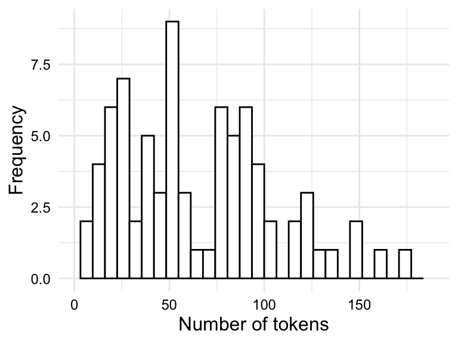
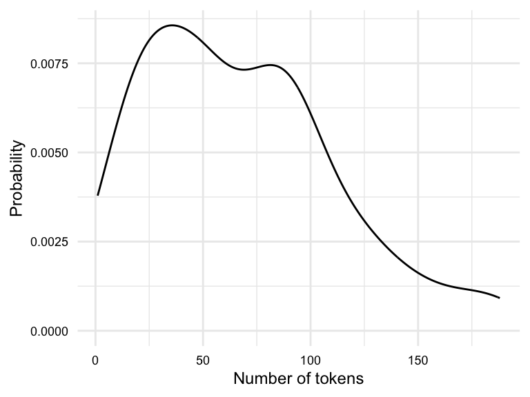
tokens.
Both the histogram in Figure 3.3 (a) and the density plot in Figure 3.3 (b) show the distribution of the variable tokens in slightly different ways which translate into trade-offs in terms of interpretability.
The histogram shows the frequency of the values in bins. The number of bins and/ or binwidth can be changed for more or less granularity. A rough grain histogram shows the general shape of the distribution, but it is difficult to see the details of the distribution. A fine grain histogram shows the details of the distribution, but it is difficult to see the general shape of the distribution. The density plot shows the general shape of the distribution, but it hides the details of the distribution. Given this trade-off, it is often useful explore outliers with histograms and the overall shape of the distribution with density plots.
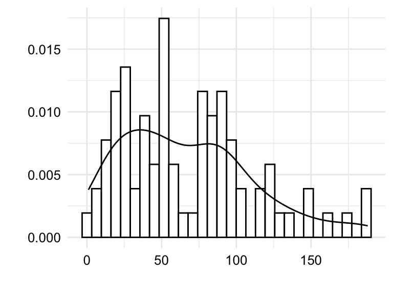
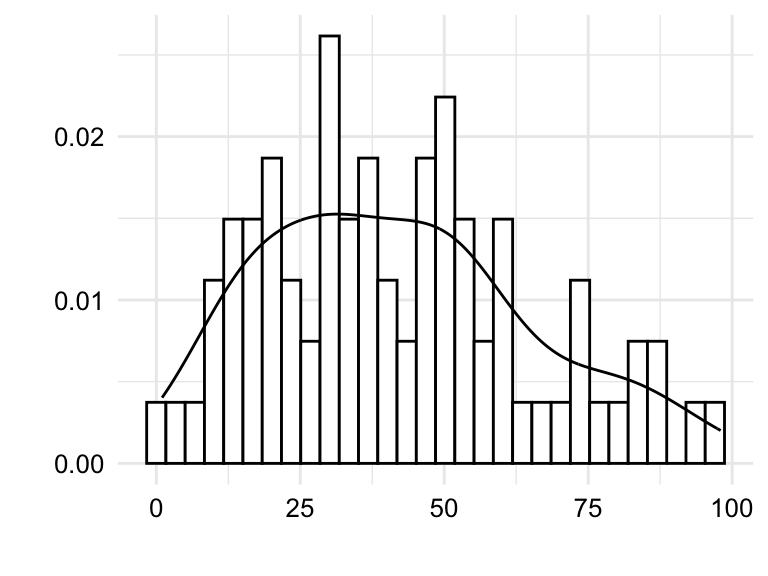
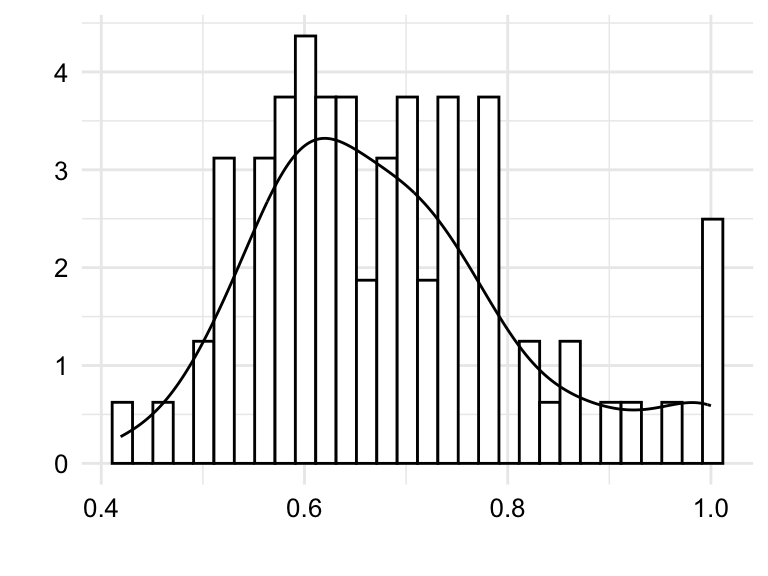
tokens, types, and ttr.
In Figure 3.4 we see both histograms and density plots combined for the variables tokens, types, and ttr. Focusing on the details captured in the histogram we are better able to detect potential outliers. Outliers can reflect valid values that are simply extreme or they can reflect something erroneous in the data. To distinguish between these two possibilities, it is important to know the context of the data. Take, for example, Figure 3.4 (c). We see that there is a bin near the value 1.0. Given that the type-token ratio is a ratio of the number of types to the number of tokens, it is unlikely that the type-token ratio would be exactly 1.0 as this would mean that every word in an essay is unique. Another, less dramatic, example is the bin to the far right of Figure 3.4 (a). In this case, the bin represents the number of tokens in an essay. An uptick in the number of essays with a large number of tokens is not surprising and would not typically be considered an outlier. On the other hand, consider the bin near the value 0 in the same plot. It is unlikely that a true essay would have 0, or near 0, words and therefore a closer look at the data is warranted.
It is important to recognize that outliers contribute undue influence to overall measures of central tendency and dispersion. To appreciate this, let’s consider another helpful visualization called a boxplot. A boxplot is a visual representation which aims to represent the central tendency, dispersion, and distribution of a numeric variable in one plot.
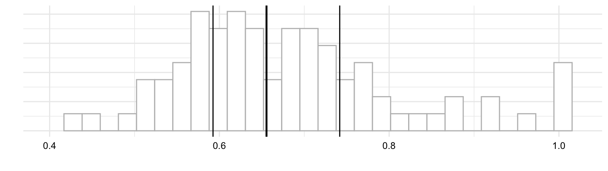
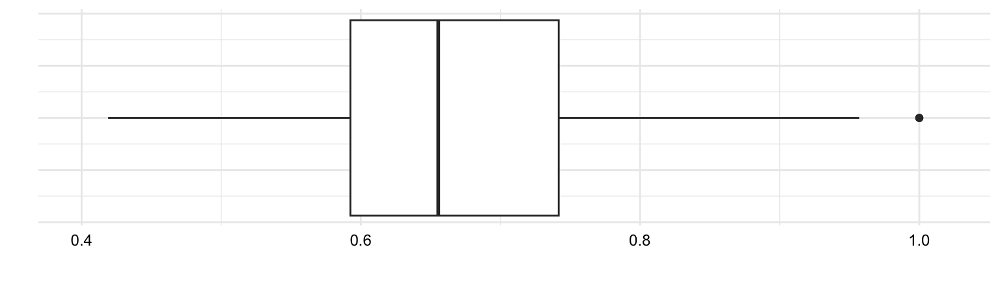
In Figure 3.5 (b) we see a boxplot for ttr variable. The box in the middle of the plot represents the interquartile range (IQR) which is the range of values between the first quartile and the third quartile. The solid line in the middle of the box represents the median. The lines extending from the box are called ‘whiskers’ and provide the range of values which are within 1.5 times the IQR. Values outside of this range are plotted as individual points.
Now let’s consider boxplots from another angle. Just above in Figure 3.5 (a) I’ve plotted a histogram. In this view, we can see that a boxplot is a simplifed histogram augmented with central tendency and dispersion statistics. While histograms focus on the frequency distribution of data points, boxplots focus on the data’s quartiles and potential outliers.
Concerning outliers, it is important to address them to safeguard the accuracy of the analysis. There are two main ways to address outliers: eliminate observations with outliers or transform the data. The elimination, or trimming, of outliers is more extreme as it removes data but can be the best approach for true outliers. Transforming the data is an approach to mitigating the influence of extreme but valid values. Transformation involves applying a mathematical function to the data which changes the scale and/ or shape of the distribution, but does not remove data nor does it change the relative order of the values.
The exploration the data points with histograms and boxplots has helped us to identify outliers. Now we turn to the question of the overall shape of the distribution.
When values are symmetrically dispersed around the central tendency, the distribution is said to be normal. The Normal Distribution is characterized by a distribution where the mean and median are the same. The Normal Distribution has a key role in theoretical statistics and is the foundation for many statistical tests. This distribution is also known as the Gaussian Distribution or the Bell Curve for the hallmark bell shape of the distribution. In a normal distribution, extreme values are less likely than values near the center.
When values are not symmetrically dispersed around the central tendency, the distribution is said to be skewed. A distribution in which values tend to disperse to the left of the central tendency is left skewed and a distribution in which values tend to disperse to the right of the central tendency is right skewed.
Simulations of these distributions appear in Figure 3.6.
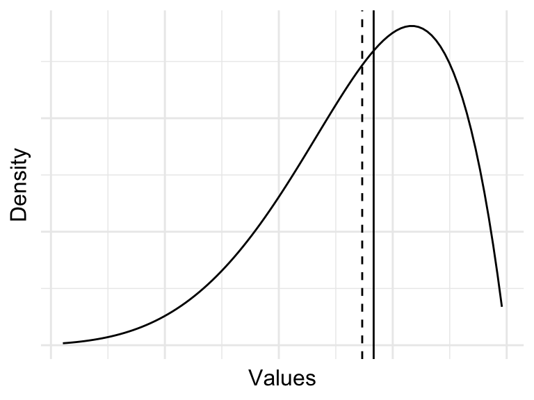
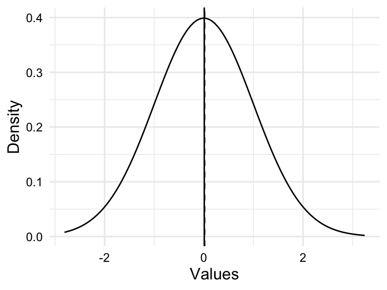
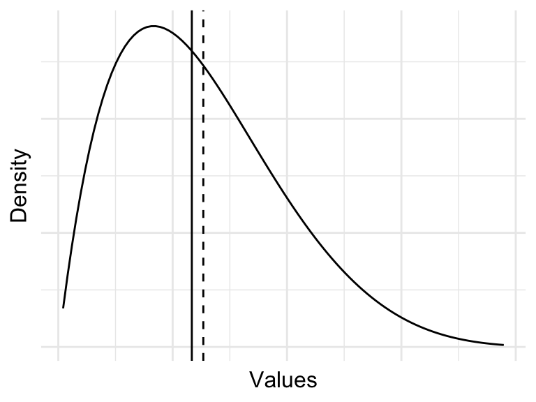
Assessing the distribution of a variable is important for two reasons. First, the distribution of a variable can inform the choice of statistical test in theory-based hypothesis testing. Data that are normally, or near-normally distributed are often analyzed using parametric tests while data that exhibit a skewed distributed are often analyzed using non-parametric tests. Second, highly skewed distributions have the effect of compressing the range of values. This can lead to a loss of information and can make it difficult to detect patterns in the data.
Skewed frequency distributions are commonly found for linguistic units (.e.g phonemes, morphemes, words, etc.). However, these distributions tend to a follow a particular type of skew known as a Zipf distribution. According to Zipf’s Law (Zipf, 1949), the frequency of a linguistic unit is inversely proportional to its rank. In other words, the most frequent units will appear twice as often as the second most frequent unit, three times as often as the third most frequent unit, and so on.
The plot in Figure 3.7 (a) is simulated data that fits a Zipfian distribution.
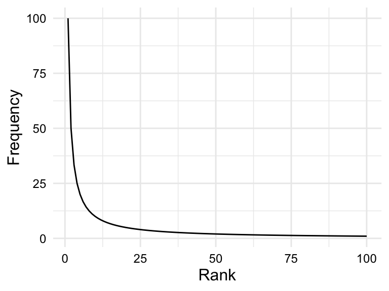
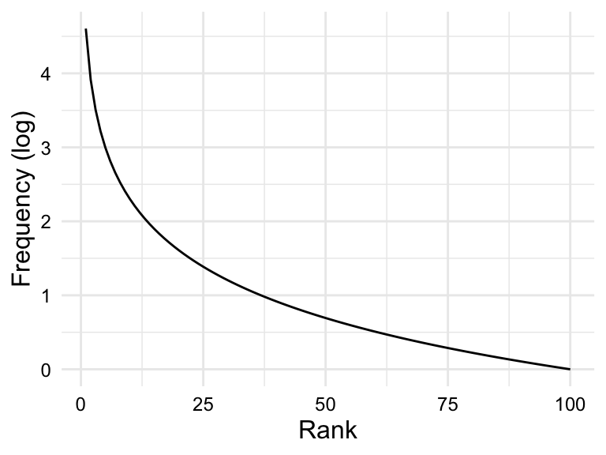
Zipf’s law describes a theoretical distribution, and the actual distribution of units in a corpus is affected by various sampling factors, including the size of the corpus. The larger the corpus, the closer the distribution will be to the Zipf distribution.
In the case that a variable is highly skewed (such as in linguistic frequency distributions), it is often useful to attempt transform the variable to reduce the skewness. In contrast to scale-based transformations (e.g. centering and scaling), shape-based transformations change the scale and the shape of the distribution. The most common shape-based transformation is the logarithmic transformation. The logarithmic transformation (log-transformation) takes the log (typically base 10) of each value in a variable. The log-transformation is useful for reducing the skewness of a variable as it compresses large values and expands small values. If the skewness is due to these factors, the log-transformation can help, as in the case of the Zipfian distribution in Figure 3.7 (b).
It is important to note, however, that if scale-based transformations are to be applied to a variable, they should be applied after the log-transformation as the log of negative values is undefined.
Association
We have covered the first three of the four questions we are interested in asking in a descriptive analysis. The fourth, and last, question is whether there is an association between variables. If so, what is the directionality and what is the apparent magnitude of the dependence? Knowing the answers to these questions will help frame our approach to analysis.
To assess association, the number and information types of the variables under consideration are important. Let’s start by considering two variables. If we are working with two variables, we are dealing with a bivariate relationship. Given there are three informational types (categorical, ordinal, and numeric), there are six logical bivariate combinations: categorical-categorical, categorical-ordinal, categorical-numeric, ordinal-ordinal, ordinal-numeric, and numeric-numeric.
The directionality of a relationship will take the form of a tabular or graphic summary depending on the informational value of the variables involved. In Table 3.6, we see the appropriate summary types for each of the six bivariate combinations.
| Categorical | Ordinal | Numeric | |
|---|---|---|---|
| Categorical | Contingency table | Contingency table/ Bar plot | Pivot table/ Boxplot |
| Ordinal | - | Contingency table/ Bar plot | Pivot table/ Boxplot |
| Numeric | - | - | Scatterplot |
Let’s first start with the combinations that include a categorical or ordinal variable. Categorical and ordinal variables reflect measures of class-type information, with add meaningful ranks to ordinal variables. To assess a relationship with these variable types, a table is always a good place to start. When combined together, a contingency table is the appropriate table. A contingency table is a cross-tabulation of two class-type variables, basically a two-way frequency table. This means that three of the six bivariate combinations are assessed with a contingency table: categorical-categorical, categorical-ordinal, and ordinal-ordinal.
In Table 3.7 we see contingency tables for the categorical variable sex and ordinal variable group in the BELC dataset. A contingency table may include only counts, as in Table 3.7 (a), or may include proportions or percentages in an effort to normalize the counts and make them more comparable, as in Table 3.7 (b).
sex and ordinal variable group in the BELC dataset
| group | female | male | Total |
|---|---|---|---|
| T1 | 14 | 11 | 25 |
| T2 | 11 | 5 | 16 |
| T3 | 13 | 11 | 24 |
| T4 | 10 | 5 | 15 |
| Total | 48 | 32 | 80 |
| group | female | male | Total |
|---|---|---|---|
| T1 | 56.00% | 44.00% | 100.00% |
| T2 | 68.75% | 31.25% | 100.00% |
| T3 | 54.17% | 45.83% | 100.00% |
| T4 | 66.67% | 33.33% | 100.00% |
| Total | 60.00% | 40.00% | 100.00% |
It is sometimes helpful to visualize a contingency table as a bar plot when there are a larger number of levels in either or both of the variables. Again, looking at the relationship between sex and group, we see that we can plot the counts or the proportions. In Figure 3.8, we see both.
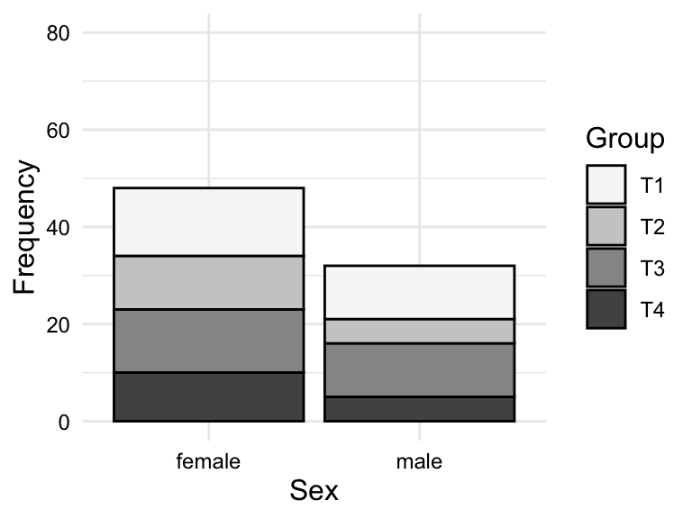
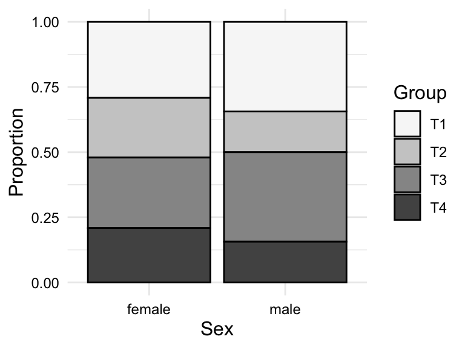
sex and group in the BELC dataset
To summarize and assess the relationship between a categorical or an ordinal variable and a numeric variable, we cannot use a contingency table. Instead, this type of relationship is best summarized in a table using a summary statistic in a pivot table. A pivot table is a table in which a class-type variable is used to group a numeric variable by some summary statistic appropriate for numeric variables, e.g. mean, median, standard deviation, etc.
In Table 3.8, we see a pivot table for the relationship between group and tokens in the BELC dataset. Specifically, we see the mean number of tokens by group. We see that the mean number of tokens increases from Group T1 to T4, which is consistent with the idea that the students in the higher groups are writing longer essays.
tokens by group in the BELC dataset
| group | mean_tokens |
|---|---|
| T1 | 29.6 |
| T2 | 58.7 |
| T3 | 83.9 |
| T4 | 114.5 |
Although a pivot table may be appropriate for targeted numeric summaries, a visualization is often more informative for assessing the dispersion and distribution of a numeric variable by a categorical or ordinal variable. There are two main types of visualizations for this type of relationship: a boxplot and a violin plot. A violin plot is a visualization that summarizes the distribution of a numeric variable by a categorical or ordinal variable, adding the overall shape of the distribution, much as a density plot does for histograms.
In Figure 3.9, we see both a boxplot and a violin plot for the relationship between group and tokens in the BELC dataset. From the boxplot in Figure 3.9 (a), we see that the general trend towards more tokens used by students in higher groups. But we can also appreciate the dispersion of the data within each group looking at the boxes and whiskers. On the surface it appears that the data for groups T1 and T3 are closer to each other than groups T2 and T4, in which there is more variability within these groups. Furthermore, we can see outliers in groups T1 and T3, but not in groups T2 and T4. From the violin plot in Figure 3.9 (b), we can see the same information, but we can also see the overall shape of the distribution of tokens within each group. In this plot, it is very clear that group T4 includes a wide range of token counts.

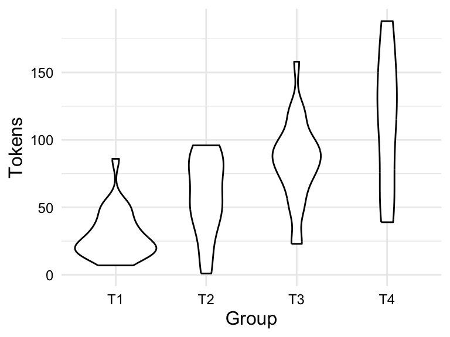
group and tokens in the BELC dataset
The last bivariate combination is numeric-numeric. To summarize this type of relationship a scatterplot is used. A scatterplot is a visualization that plots each data point as a point in a two-dimensional space, with one numeric variable on the x-axis and the other numeric variable on the y-axis. Depending on the type of relationship you are trying to assess, you may want to add a trend line to the scatterplot. A trend line is a line that summarizes the overall trend in the relationship between the two numeric variables. To assess the extent to which the relationship is linear, a straight line is drawn which minimizes the distance between the line and the points.
In Figure 3.10, we see a scatterplot and a scatterplot with a trend line for the relationship between ttr and types in the BELC dataset. We see that there is an apparent positive relationship between these two variables, which is consistent with the idea that as the number of types increases, the type-token ratio increases. In other words, as the number of unique words increases, so does the lexical diversity of the text. Since we are evaluating a linear relationship, we are assessing the extent to which there is a correlation between ttr and types. A correlation simply means that as the values of one variable change, the values of the other variable change in a consistent manner.
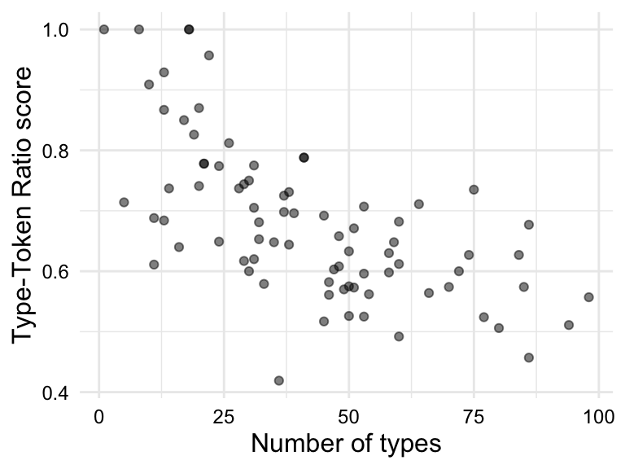
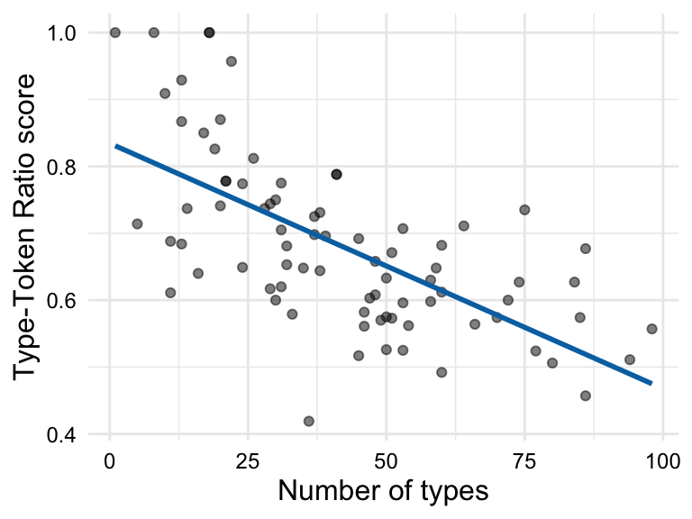
ttr and types in the BELC dataset
3.2 Analyze
The goal of analysis, generally, is to generate knowledge from information. The type of knowledge generated and the process by which it is generated, however, differ and can be broadly grouped into three analysis types: exploratory, predictive, and inferential.
In this section, I will elaborate briefly on the distinctions between analysis types seen in Table 3.9. I will structure the discussion moving from the least structured (inductive) to most structured (deductive) approach to deriving knowledge from information with the aim to provide enough information for you to identify these research approaches in the literature and to make appropriate decisions as to which approach your research should adopt.
| Type | Aims | Approach | Methods | Evaluation |
|---|---|---|---|---|
| Exploratory | Explore: gain insight | Inductive, data-driven, and iterative | Descriptive, pattern detection with machine learning (unsupervised) | Associative |
| Predictive | Predict: validate associations | Semi-deductive, data-/ theory-driven, and iterative | Predictive modeling with machine learning (supervised) | Model performance, feature importance, and associative |
| Inferential | Explain: test hypotheses | Deductive, theory-driven, and non-iterative | Hypothesis testing with statistical tests | Causal |
Explore
In Exploratory Data Analysis (EDA), we use a variety of methods to identify patterns, trends, and relations within and between variables. The goal of EDA is uncover insights in an inductive, data-driven manner. That is to say, that we do not enter into EDA with a fixed hypothesis in mind, but rather we explore intuition, probe anecdote, and follow hunches to identify patterns and relationships and to evaluate whether and why they are meaningful. We are admittedly treading new or unfamiliar terrain letting the data guide our analysis. This means that we can use and reuse the same data to explore different angles and approaches adjusting our methods and measures as we go. In this way, EDA is an iterative, meaning generating process.
In line with the investigative nature of EDA, the identification of variables of interest is a discovery process. We most likely have a intuition about the variables we would like to explore, but we are able to adjust our variables as need be to suit our research aims. When the identification and selection of variables is open, the process is known as feature engineering. A process that is much an art as a science, feature engineering leverages a mixture of relevant domain knowledge, intuition, and trial and error to identify features that serve to best represent the data and to best serve the research aims. Furthermore, the roles of features in EDA are fluid –no variable has a special status, as seen in Figure 3.11. We will see that in other types of analysis, some or all the roles of the variables are fixed.
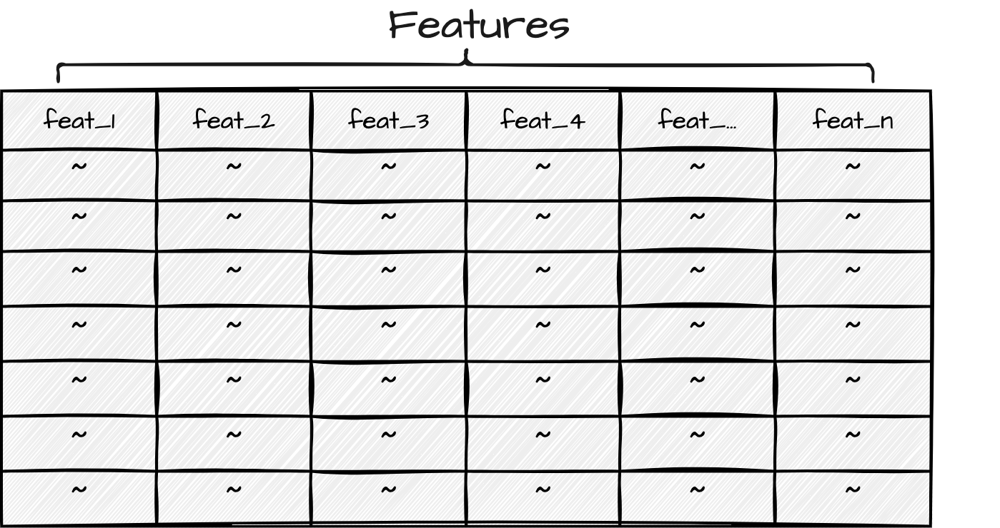
Any given dataset could serve as a starting point to explore many different types of research questions. In order to maintain research coherence so our efforts to not careen into a free-for-all, we need to tether our feature engineering to a unit of analysis that is relevant to the research question. A unit of analysis is the entity that we are interested in studying. Not to be confused with the unit of observation, which is the entity that we are able to observe and measure (Sedgwick, 2015). Depending on the perspective we are interested in investigating, the choice of how to approach engineering features to gain insight will vary.
By the same token, approaches for interrogating the dataset can differ significantly, between research projects and within the same project, but for instructive purposes, let’s draw a distinction between descriptive methods and unsupervised learning methods, as seen in Table 3.10.
| Descriptive methods | Unsupervised learning methods |
|---|---|
| Frequency analysis | Cluster analysis |
| Co-occurence analysis | Principal component analysis |
| Keyness analysis | Topic Modeling |
| Vector space models |
The first group, descriptive methods can be seen as an extenstion of the descriptive statistics covered earlier in this chapter including statistic, tabular, and visual techniques. The second group, unsupervised learning, is a subtype of machine learning in which an algorithm is used to find patterns within and between variables in the data without any guidance (supervision). In this way, the algorithm, or machine learner, is left to make connections and associations wherever they may appear in the input data.
Either through descriptive, unsupervised learning methods, or a combination of both, EDA employs quantitative methods to summarize, reduce, and sort complex datasets in order to provide the researcher novel perspective to be qualitatively assessed. Exploratory methods produce results that require associative thinking and pattern detection. Speculative as they are, the results from exploratory methods can be highly informative and lead to new insight and inspire further study in directions that may not have been expected.
Predict
Predictive Data Analysis (PDA) employs a variety of techniques to examine and evaluate the association strength between a variable or set of variables, with a specific focus on predicting a target variable. The aim of PDA is to construct models that can accurately forecast future outcomes, using either data-driven or theory-driven approaches. In this process, supervised learning methods, where the machine learning algorithm is guided (supervised) by a target outcome variable, are used. This means we don’t begin PDA with a completely open-ended exploration, but rather with an objective - accurate predictions. However, the path to achieving this objective can be flexible, allowing us freedom to adjust our models and methods. Unlike EDA, where the entire dataset can be reused for different approaches, PDA requires a portion of the data to be reserved for evaluation, enhancing the validity of our predictive models. Thus, PDA is an iterative process that combines the flexibility of exploratory analysis with the rigor of confirmatory analysis.
There are two types of variables in PDA: the outcome variable and the predictor variables, or features. The outcome variable is the variable that the researcher is trying to predict. It is the only variable that is necessarily fixed as part of the research question. The features are the variables that are used to predict the outcome variable. An overview of the roles of these variables in PDA is shown in Figure 3.12.

Feature selection can be either data-driven or theory-driven. Data-driven features are those that are engineered to enhance predictive power, while theory-driven features are those that are selected based on theoretical relevance.
The approach to interrogating the dataset includes three main steps: feature engineering, model selection, and model evaluation. We’ve discussed feature engineering, so what is model selection and model evaluation?
Model selection is the process of choosing a machine learning algorithm and set of features that produces the best prediction accuracy for the outcome variable. To refine our approach such that we arrive at the best combination of algorithm and features, we need to train our machine learner on a variety of combinations and evaluate the accuracy of each.
There are many different types of machine learning algorithms, each with their own strengths and weaknesses. The first rough cut is to decide what type of outcome variable we are predicting: categorical or numeric. If the outcome variable is categorical, we are performing a classification task, and if the outcome variable is numeric, we are performing a regression task. As we see in Table 3.11, there are various algorithms that can be used for each task.
| Classification | Regression |
|---|---|
| Logistic Regression | Linear Regression |
| Random Forest Classifier | Random Forest Regressor |
| Support Vector Machine | Support Vector Regression |
| Neural Network Classifier | Neural Network Regressor |
There are a number of algorithm-specific strengths and weaknesses to be considered in the process of model selection. These hinge on characteristics of the data, such as the size of the dataset, the number of features, the type of features, and the expected type of relationships between features or on computing resources, such as the amount of time available to train the model or the amount of memory available to store the model.
Model evaluation is the process of assessing the accuracy of the model on the test set, which is a proxy for how well the model will generalize to new data. Model evaluation is performed quantitatively by calculating the accuracy of the model. It is important to note that whether the accuracy metrics are good is to some degree qualitative judgment.
Infer
The most commonly recognized of the three data analysis approaches, Inferential data analysis (IDA) is the bread-and-butter of science. IDA is a deductive, theory-driven approach in which all aspects of analysis stem from a pre-determined premise, or hypothesis, about the nature of a relationship in the world and then aims to test whether this relationship is statistically supported given the evidence. Since the goal is to infer conclusions about a certain relationship in the population based on a statistical evaluation of a (corpus) sample, the representativeness of the sample is of utmost importance. Furthermore, the use of the data is limited to the scope of the hypothesis –that is, the data cannot be used iteratively for exploratory purposes.
The selection of variables and the roles they play in the analysis are determined by the hypothesis. In a nutshell, a hypothesis is a formal statement about the state of the world. This statement is theory-driven meaning that it is predicated on previous research. We are not exploring or examining relationships, rather we are testing a specific relationship. In practice, however, we are in fact proposing two mutally exclusive hypotheses. The first is the Alternative Hypothesis, or \(H_1\). This is the hypothesis I just described –the statement grounded in the previous literature outlining a predicted relationship. The second is the Null Hypothesis, or \(H_0\). This is the flip-side of the hypothesis testing coin and states that there is no difference or relationship. Together \(H_1\) and \(H_0\) cover all logical outcomes.
Now, in standard IDA one variable is the response variable and one or more variables are explanatory variables. The response variable, sometimes referred to as the outcome or dependent variable, is the variable which contains the information which is hypothesized to depend on the information in the explanatory variable(s). It is the variable whose variation a research study seeks to explain. An explanatory variable, sometimes referred to as a independent or predictor variable, is a variable whose variation is hypothesized to explain the variation in the response variable.
Explanatory variables add to the complexity of a study because they are part of our research focus, specifically our hypothesis. It is, however, common to include other variables which are not of central focus, but are commonly assumed to contribute to the explanation of the variation of the response variable. These are known as control variables. Control variables are included in the analysis to account for the influence of other variables on the relationship between the response and explanatory variables, but will not be included in the hypothesis nor interpreted in our results.
We can now see in Figure 3.13 the variables roles assigned to variables in a hypothesis-driven study.
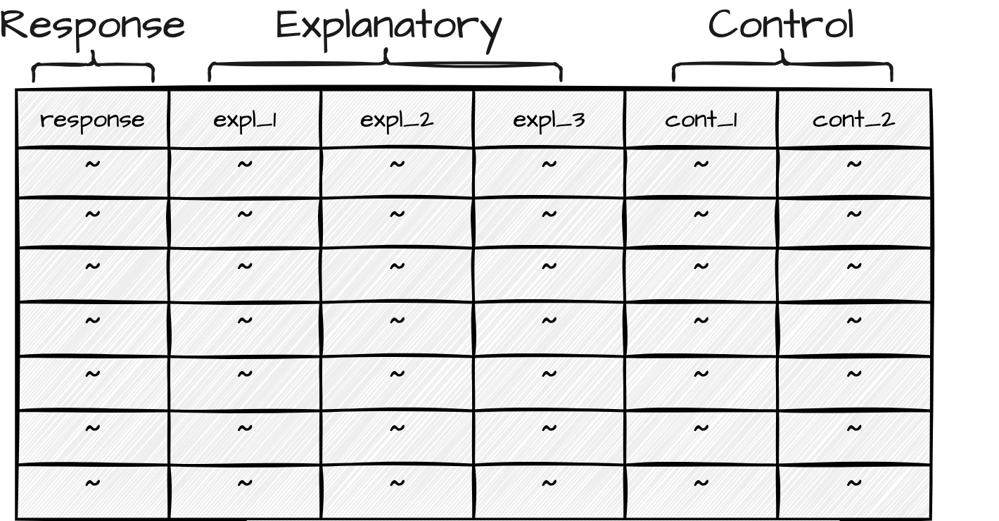
The type of statistical test that one chooses is based on (1) the informational value of the dependent variable and (2) the number of predictor variables included in the analysis. Together these two characteristics go a long way in determining the appropriate class of statistical test (see Gries (2013) and Paquot & Gries (2020) for a more exhaustive description).
IDA relies heavily on quantitative evaluation methods to draw conclusions that can be generalized to the target population. It is key to understand that our goal in hypothesis testing is not to find evidence in support of \(H_1\), but rather to assess the likelihood that we can reliably reject \(H_0\).
Traditionally, \(p\)-values have been used to determine the likelihood of rejecting \(H_0\). A \(p\)-value is the probability of observing a test statistic as extreme as the one observed, given that \(H_0\) is true. However, \(p\)-values are not the only metric used to evaluate the likelihood of rejecting \(H_0\). Other metrics, such as effect size and confidence intervals, are also used to interpret the results of hypothesis tests.
3.3 Communicate
Conducting research should be enjoyable and personally rewarding but the effort you have invested and knowledge you have generated should be shared with others. Whether part of a blog, presentation, journal article, or for your own purposes it is important to document your analysis results and process in a way that is informative and interpretable. This enhances the value of your work, allowing others to learn from your experience and build on your findings.
Report
The most widely recognized form of communicating research is through a report. A report is a narrative of your analysis, including the research question, the data you used, the methods you applied, and the results you obtained. We are both reporting our findings and documenting our process to inform others of what we did and why we did it but also to invite readers to evaluate our findings for themselves. The scientific process is a collaborative one and evaluation by peers is a key component of the process.
Document
While a good report will include the most vital information to understand the procedures, results, and findings of an analysis, there is much more information generated in the course of an analysis which does not traditionally appear in prose. If a research project is conducted programmatically, however, data, code, and documentation can be made available to others as part of the communication process. Increasingly, researchers are sharing their data and code as part of the publication process. This allows others to reproduce the analysis and verify the results contributing to the collaborative nature of the scientific process.
Together, data, code, and documentation form a research compendium. As you can imagine the research process can quickly become complex and unwieldy as the number of files and folders grows. If not organized properly, it can be difficult to find the information you need. Furthermore, if not documented, decisions made in the course of the analysis can be difficult or impossible to trace. For this reason, it is recommendable to follow a set of best practices for organizing and documenting your research compendium. We will cover this in more detail in subsequent chapters.
Activities
In the following activies, we will build on our understanding of how to summarize data using statistics, tables, and plots. We will dive deeper into the use of {skimr} (Waring et al., 2022) to summarize data and the ggplot2 package (Wickham, Chang, et al., 2024) to create plots. We also introduce producing Quarto tables and figures with appropriate code block options. We will reinforce our understanding of {readr} (Wickham, Hester, & Bryan, 2024) to read in data and {dplyr} (Wickham, François, Henry, Müller, & Vaughan, 2023) to manipulate data.
Summary
In this chapter we have focused on description and analysis –the third component of DIKI Hierarchy. This is the stage where we begin to derive knowledge from the data which includes first performing a descriptive assessment of the individual variables and relationships between variables. Only after we have a better understanding of our data, we move to the analysis stage. We outlined three data analysis types in this chapter: exploratory, predictive, and inferential. Each of these embodies distinct approaches to deriving knowledge from data. Ultimately the choice of analysis type is highly dependent on the goals of the research.
I rounded out this chapter with a short description of the importance of communicating the analysis process and results. Reporting, in its traditional form, is documented in prose in an article. Yet even the most detailed reporting in a write-up still leaves many practical, but key, points of the analysis obscured. A programming approach provides the procedural steps taken that when shared provide the exact methods applied. Together with the write-up, a research compendium which provides the scripts to run the analysis and documentation on how to run the analysis forms an integral part of creating reproducible research.